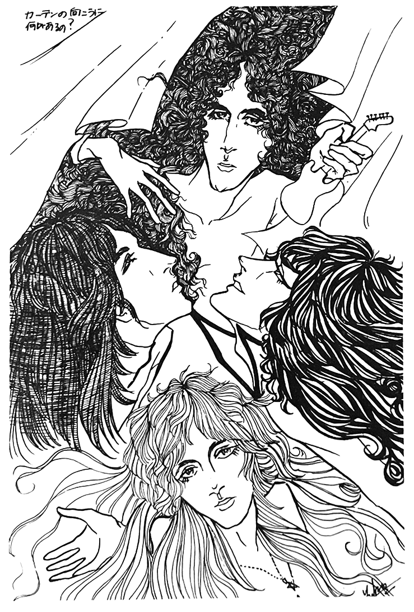

Te wo toriatte ikou
(Let's go hand-in-hand)

First, let me introduce myself: my name is Tenpei Matsubayashi, and yes this is my real name. I'm often asked by various people if it's my real name, so just to be sure. Until I was put in charge of Queen at the end of last year, I was in charge of all of Atlantic's soul music and Elektra/Asylum's MOR stuff (such as Linda Rondstadt and Joni Mitchell). My hobbies are watching movies and oil painting. I listen to all kinds of music. The first Queen song I heard was, of course, Flaming Rock'n'Roll [the Japanese title of Keep Yourself Alive]. I'll be writing about Queen at length here.
Regarding the band, the first thing I want to say is actually about you all—the fans. It's only been four months since I started in this position, but I've been surprised to find that all the Queen fans pay a lot more attention to the music than I had expected. Even when I talk to fans on the phone, it's clear that they've really listened to every last bit of Queen's records, and they're getting information so quickly that it feels like they're losing their minds. And above all, they're doing it with a pureness of intent to love Queen not as idols but as musicians. I vowed to myself to do my best by them, period.
Now, regarding the single te wo toriatte, which I have been getting a lot of inquiries about recently, I occasionally hear dissenting opinions such as "That song was written by Brian with all his heart for his Japanese fans, and it has meaning precisely because it is one of the songs on the LP. Please don't try to cheapen it by selling it as a single!" But let me share my point of view on this. There is a reason why te wo toriatte was released as a Japan-only single. It may seem like the only reason we released it as as single was because some of the lyrics are in Japanese, but it must be noted that we received a flood of requests for it as soon as the LP A Day at the Races was released in Japan. This should be interpreted as meaning that the appeal of the song itself was bolstered by the support of the fans rather than its language. I think that many Queen fans, especially those who have become fans more recently, associate Queen with songs like te wo, BoRhap, and Somebody to Love. For long-time fans who are nostalgic with memories of Queen songs like Liar and Son and Daughter, they may be dissatisfied with Queen's recent sound, with the only hard-hitting track on the new LP being Tie Your Mother Down. But we ultimately decided that releasing te wo as a Japanese single was necessary to appeal to a broader Queen fanbase.
Queen themselves are usually reluctant to do region-specific releases, but this time they were very cooperative. They even went through the trouble of sending us an edited master tape from New York during their recent US tour. This is a rare occurrence. Queen must have been very enthusiastic about releasing this single as a way to thank their Japanese fans. And, keep in mind that although Japan is the second-largest market in the world, many musicians are unwilling to communicate in Japanese, but Queen has chosen to do so. Let's applaud them for that.
Personally, I'm quite satisfied with Queen's recent musical direction. The production on Races isn't as flashy as it was on Opera, but it's more precise, and it feels like they have their feet planted more firmly on the ground. I prefer this. If I may express my personal opinion, I think the five songs on side one are perfect, both in terms of quality and the order of appearance. Recently they have put a greater emphasis on pop music, such as Long Away and You and I, but this has also become a new point of attraction for Queen, and I think it's something that shouldn't be overlooked as it will surely only increase their fanbase. On top of that, I think it can also be cited as one of the reasons they've been able to achieve their status as superstars in the US. It seems clear that in order to gain airplay on radio stations, they needed to diversify the harder sounds of their debut. In the US their success began with Killer Queen, followed by pop tracks like BoRhap, Best Friend, and Somebody before releasing a song like Tie Your as a single. Once their image was established, THEN they decided to unleash a harder rock number. But in Japan, for the reasons discussed above, they really want to make te wo a huge hit. Dear fans, please do your part.
—Tenpei Matsubayashi, Warner Pioneer